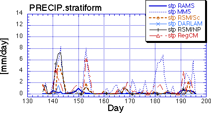

Stratiform Precipitation
Curves show the daily stratiform precipitation by each model listed in the key for the "Upper Mississippi" domain (37N-47N; 89W-99W).
[Higgins = gridded observations; RSM/NP = NCEP RSM; RSM/Sc = Scripps RSM]
